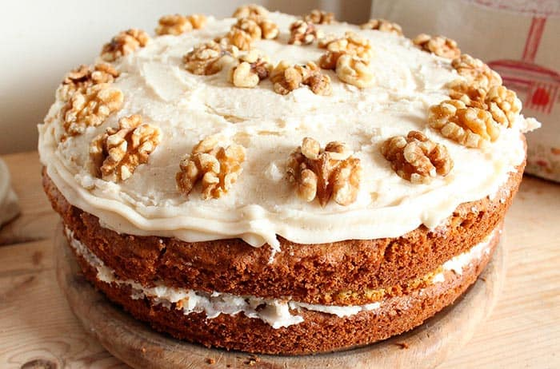

Bolo de cenoura caseiro
AUTORA: Genesys Rondon
Vamos preparar um delicioso bolo de cenoura coberto de glacê
O bolo de cenoura é uma sobremesa muito gostosa que a as pessoas gostam de comer com chá ou café na merienda
- Prato: Postre
- Cozinha: Caseira
- Tempo de preparação: 20 minutos
- tempo de cozimento: 40 minutos
- Porções: 4
- Calorias: 430 kcal